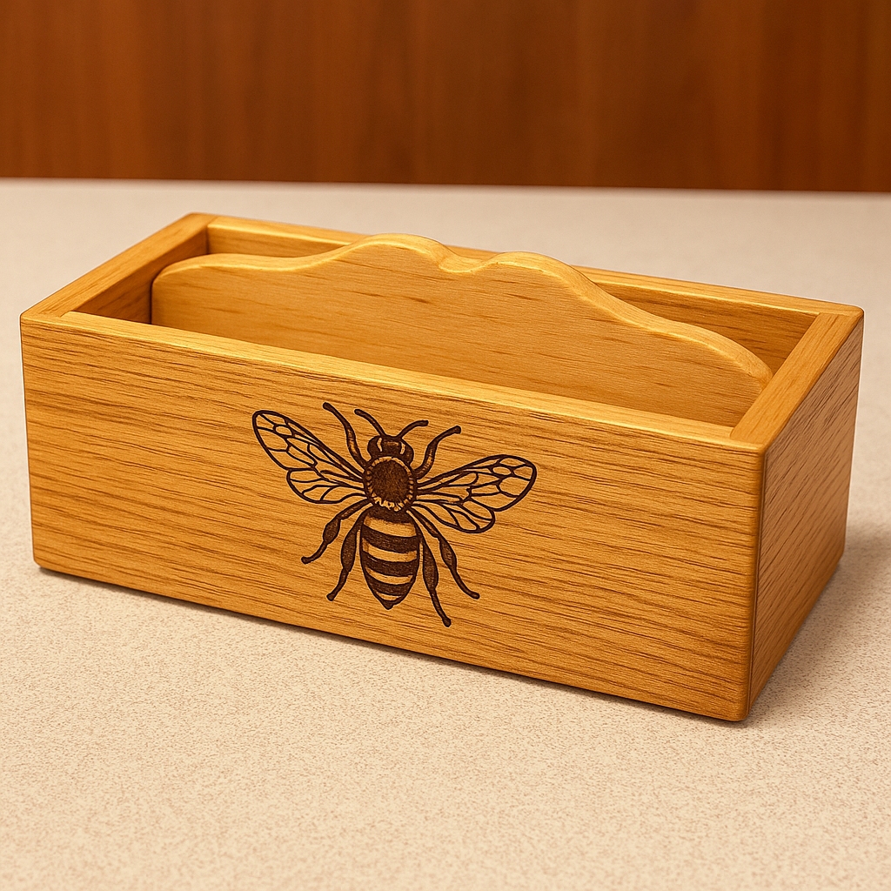

In this unit you will make the approved small timber box with a fitted lid. The confirmed high-level construction features are dovetails, a back rebate, a finger joint, a bottom rebate, square glue-up, lid chamfers and teacher-supplied or teacher-approved small hinges.

Throughout the course you will:
This website supports theory and evidence only. Follow teacher direction and current workshop documents for all dimensions, settings, tolerances and practical procedures.